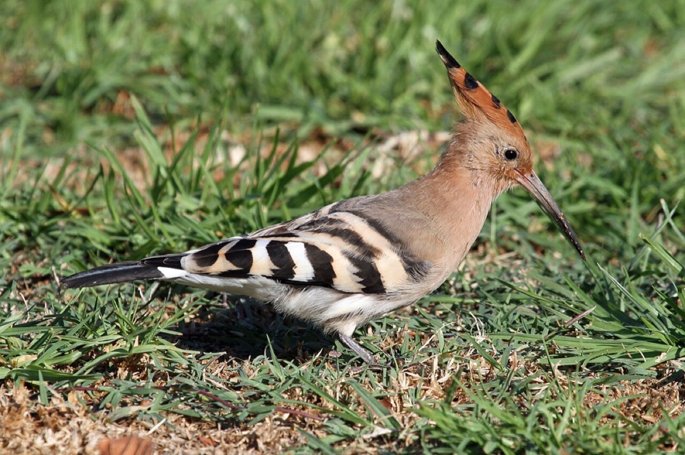

Escucha y descubre
Graba un canto y revisa las especies sugeridas. El análisis se realiza en tu dispositivo.
Ponle nombre a lo que escuchas. Descubre las aves que te rodean y convierte cada paseo en una pequeña expedición.
Descubre WingPróximamente en App Store · Para iPhone

Desde el primer sonido de la mañana hasta ese pájaro que vuelve a tu ventana. Wing te acompaña a conocerlos un poco mejor.
Graba un canto y revisa las especies sugeridas. El análisis se realiza en tu dispositivo.
Explora una guía de especies y consulta observaciones cercanas en el mapa.
Construye tu diario de avistamientos y practica para reconocer más aves la próxima vez.
Una experiencia tranquila, pensada para acompañarte fuera de casa. Abre Wing, escucha un momento y sigue tu curiosidad.


Prueba las funciones de Wing y decide si te acompaña en tu próximo paseo.
Próximamente en App Store · Para iPhone
7 días de prueba gratuita
Precio de referencia en España, impuestos incluidos. En otros países se aplica el precio local mostrado por App Store. Prueba solo para usuarios elegibles. Después, renovación automática anual hasta cancelación. Cancela al menos 24 h antes desde las suscripciones de Apple. La entrega del recordatorio depende de iOS y tus ajustes.
Wing analiza fragmentos de sonido en tu dispositivo y sugiere posibles especies. No necesita enviar la grabación a un servicio de IA. Las sugerencias pueden equivocarse: contrástalas con el aspecto, el lugar y el comportamiento del ave.
La identificación por sonido y el contenido ya disponible en el dispositivo pueden funcionar sin conexión. Las observaciones cercanas, los mapas, las imágenes y otros contenidos remotos pueden necesitar Internet.
Sí, el plan anual ofrece una prueba de 7 días para usuarios elegibles según App Store. Luego se renueva por el precio anual que confirme Apple, salvo cancelación. La suscripción es necesaria para acceder a las funciones.
Autoriza las notificaciones en Wing. Durante una prueba activa con renovación prevista, se programa un recordatorio local 48 horas antes del final. iOS y tus ajustes controlan la entrega. Puedes cancelar desde Apple sin esperar al recordatorio.
En Ajustes de iOS → tu nombre → Suscripciones puedes gestionar o cancelar el plan. Para evitar la renovación, cancela al menos 24 horas antes. Usa «Restaurar compras» en Wing con la misma cuenta de Apple para recuperar un acceso válido.
Escríbenos a info@legal-assistant-ai.com con el asunto «Soporte Wing».
.jpg){kind=link}